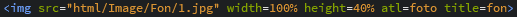

Вставка изображения
Картинки - один из важнейших источников информации. Они необходимы для наглядных разьяснений текста, то есть все возможные рисунки, фотографии, скриншоты и многие типы изображения. Изображение может быть оформлено по размеру, с рамкой, в тексте, и многим другим параметрам.
Для вставки изображения используют команду 
И так рассмотрим тэги присутствующие в данной строке.
img src="" - при помощи img задаётся тип файла, то есть image. Src указывает путь к файлу, например image/1.
width - (от англ. ширина) параметр, в котором указывается ширина изображения в пикселях (px) или процентах (%).
height - (от англ. высота) параметр, в котором указывается высота изображения в пикселях либо процентах.
alt - устанавливает альтернативный текст для изображения. Такой текст позволяет получить текстовую информацию об изображении при отключенной в браузере загрузке изображений.
title - название изображения, отображается при наведении курсора на данную картинку.
Так же можно добавить такое значение как align, что означает выравнивание. Данному тэгу можно задать 4 значения: left, right, top, bottom, center, то есть выравнять изображение по левому краю, по правому, по верхнему, по нижнему или же по центру.
body background="путь к файлу" - параметр для задания фонового изображения.
body bgcolor="код цвета" - цвет фона.